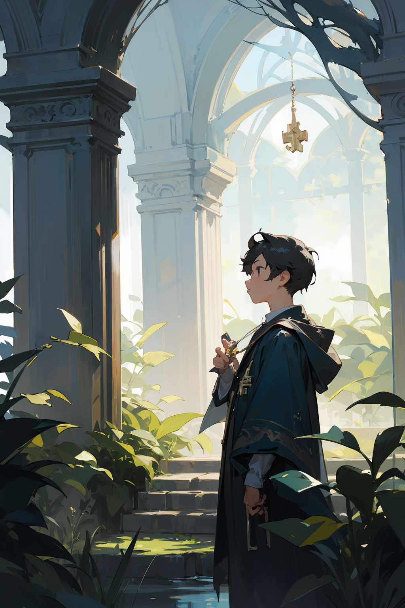

Capitulo 1
El sol se filtraba a través de las hojas del Jardín Encantado, pintando de tonos cálidos cada rincón. Mateo, un curioso explorador, se aventuraba entre las enredaderas y las rosas perfumadas. El suave murmullo del viento llevaba consigo susurros mágicos, como un canto antiguo que lo guiaba más y más profundo.
Siguiendo una mariposa de colores iridiscentes, Mateo llegó a una pradera escondida. En el centro, bajo la sombra de un sauce antiguo, descansaba una fuente de agua cristalina. Intrigado, Mateo se acercó, y justo en el borde, entre las flores que adornaban el borde de la fuente, brillaba débilmente una llave de aspecto antiguo.
La llave no era una simple pieza metálica; estaba cubierta de patrones mágicos y destellos etéreos. Mateo, sintiendo la llamada de la aventura, extendió la mano y tomó la llave con cuidado. En el momento en que sus dedos la rozaron, el jardín cobró vida de una manera aún más mágica.
Flores danzarinas liberaron fragancias embriagadoras, y luces parpadeantes tejieron una red luminosa sobre la pradera. El agua de la fuente comenzó a brillar con destellos de colores, reflejando la magia contenida en la llave que ahora sostenía Mateo.
Perplejo pero emocionado, Mateo sabía que la llave abría las puertas hacia lo desconocido en este jardín encantado. Con determinación, se puso en pie, sosteniendo la llave como un amuleto, listo para desentrañar los secretos que aguardaban más allá de cada sendero y recoveco.
